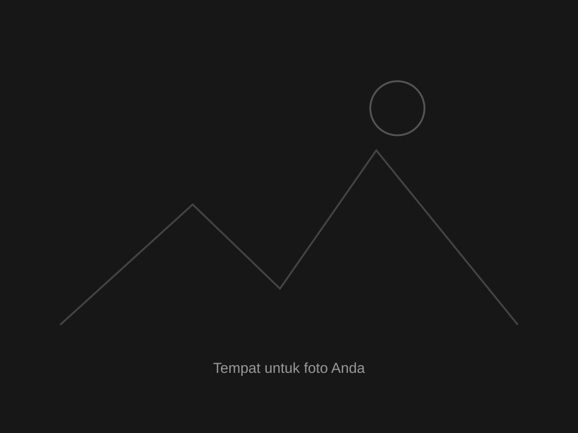

Proyek
Santri Health Care
Proyek yang saya kembangkan dalam pengalaman di PT. Alkhwarizmi Kreatif Produktif.
Detail sedang disiapkanKode · Kata · Lensa
Sebuah ruang untuk hal-hal yang saya bangun, gagasan yang saya tulis, dan momen yang saya abadikan.
Kumpulan proyek dan proses pengembangannya.
Proyek yang saya kembangkan dalam pengalaman di PT. Alkhwarizmi Kreatif Produktif.
Detail sedang disiapkan
Ganti dengan deskripsi singkat, kontribusi Anda, dan teknologi yang digunakan.
Detail sedang disiapkan
Ganti dengan deskripsi singkat, kontribusi Anda, dan teknologi yang digunakan.
Detail sedang disiapkanRuang bagi cerita, pemikiran, dan catatan belajar.

Ganti dengan abstrak singkat yang memperkenalkan gagasan utama tulisan Anda.
Read more →: Judul karya tulis 1
Ganti dengan abstrak singkat yang memperkenalkan gagasan utama tulisan Anda.
Read more →: Judul karya tulis 2
Ganti dengan abstrak singkat yang memperkenalkan gagasan utama tulisan Anda.
Read more →: Judul karya tulis 3Momen dan sudut pandang melalui lensa. Koleksi foto sedang disiapkan.
